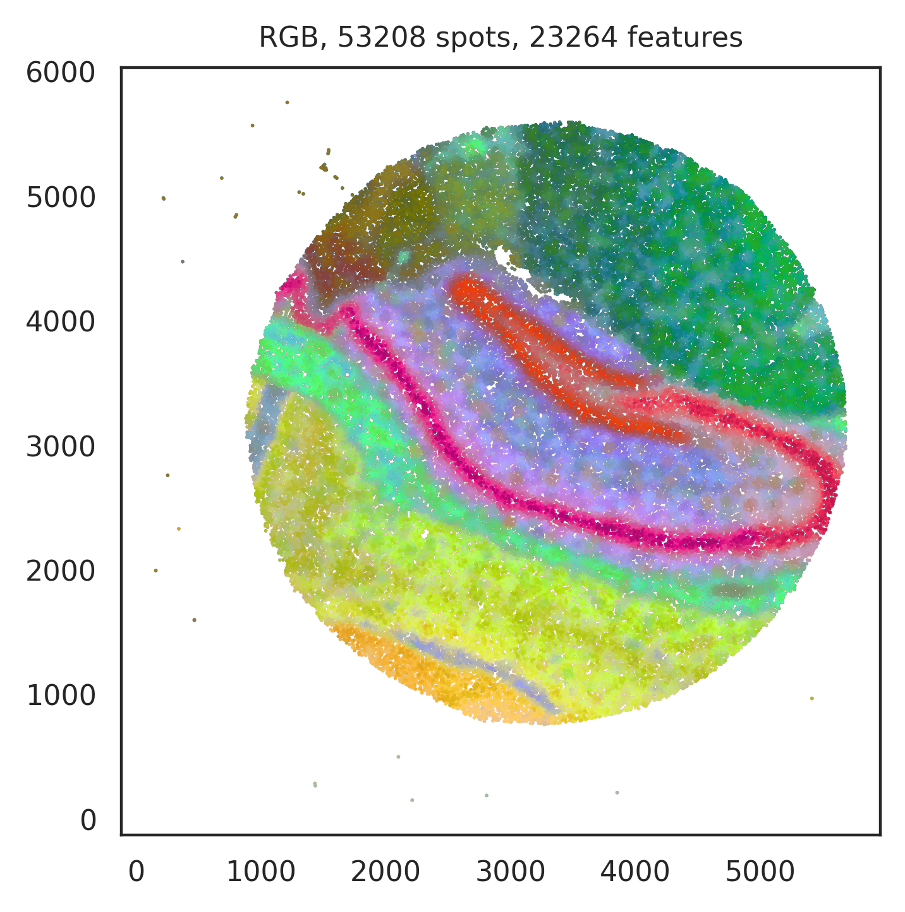

Slide-seq
[1]:
import warnings
warnings.filterwarnings("ignore")
[2]:
import SOView
import scanpy as sc
scanpy==1.9.1 anndata==0.8.0 umap==0.5.2 numpy==1.22.4 scipy==1.7.3 pandas==1.5.3 scikit-learn==1.0.2 statsmodels==0.13.5 python-igraph==0.10.4 pynndescent==0.5.8
squidpy==1.1.2
[3]:
adata_raw =sc.read_h5ad('/data/linsenlin/binary/binary1/Slide-seq/BINARY_Slide-seq(knn23).h5ad')
[4]:
adata = adata_raw.copy()
[5]:
sc.pp.neighbors(adata,use_rep='BINARY')
[6]:
sc.tl.umap(adata,n_components=3)
[7]:
adata.obsm['X_umap'].shape
[7]:
(53208, 3)
[8]:
SOView.SOViewer_plot(
adata = adata, # the data to plot
save = f'Slide-seq', # save the result to specified path or don't save (None)
embedding_use='X_umap', # which embedding to be used for plot
dot_size=1, # the marker size of the plot
)
generating color coding...
1.0 0.0
1.0 0.0
